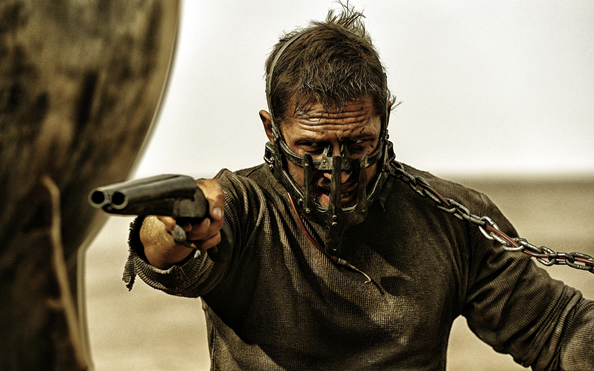

Mad Max - Fury Road

Avustralyalı yönetmen George Miller’ın yönetmenliğini yaptığı ve 1985 yılında çekilen son filmle tamamlanmış gibi görünen Mad Max serisinin yeni filmi, 12 yıllık sancılı bir süreç sonrası gösterime giriyor. Mad Max’in ardından The Witches of Eastwick, Lorenzo’s Oil, Babe: Pig in The City, Happy Feet gibi farklı türde filmlere imza atan Miller, serinin yeni filmiyle kendi yarattığı distopyaya “temelli” bir geri dönüş yapmış gibi. Sinemaseverler hatırlayacaktır; yakın gelecekte dünya üzerindeki kaynaklar üzerinden patlak veren bir savaşın yarattığı yıkımı ve sonrasında oluşan kıyamet-vari atmosferde hayatını sürdürmeye çalışan insanların çatışmasını anlatan Mad Max serisi, seyirlik bir aksiyon olduğu kadar politik alt metni ile de dikkat çekiyordu. Eski bir polis olan Max’in; adalet duygusunun ve umudun yitirildiği bu dünyada pek istemeden de olsa “iyi insanlar”a yardım etmeye çalışması üzerinden yaratılan aksiyon, çok açık mesajlarla tüketim olgusunun -petrol krizi, yeraltı kaynaklarının tüketimi, insanın sömürülmesi ve gösteri toplumunun bir parçası haline getirilmesi- yıkıcılığı üzerinden uygarlığın yeniden inşa edilmesi gerektiğini iddia eden naif bir politik görüşe sahipti. Bir yeniden çevrim olmak yerine seriyi en baştan ele alan Mad Max: Fury Road’un 100 milyon doları aşan bütçesiyle yaratacağı görsel şölen kadar, yönetmenin 30 yıl aradan sonra vereceği politik mesajlar da merak uyandırıyordu.
Az önce belirttiğim gibi yeni Mad Max’in, hikaye açısından pek de önceki seriye bağlanmak gibi bir derdi yok. Filmin açılışı, tıpkı Mad Max 2: The Road Warrior filminde olduğu gibi dünyanın nasıl bu hale geldiğini anlatan bir girizgahtan oluşuyor ve adeta her şeye yeniden başlıyor. Aynı şekilde Max’in, ailesini yitirdikten sonra artık kaybedecek bir şeyi olmayan bir adam haline gelmesi de izleyiciye –biraz basitçe de olsa- hemen anlatılıyor. Filmde Max (Tom Hardy), Immortan Joe (Hugh Keays-Byrne-serinin ilk filminde kötü adam Toecutter’ı da canlandırdığını ekleyelim) tarafından zalimce yönetilen bir kalede tutsak ediliyor ve Joe’ya karşı gelen Furiosa (Charlize Theron) isimli savaş tırı sürücüsü ile ortaklık kurmak zorunda kalıyor. Joe’nun çocuk sahibi olmak için köle gibi kullandığı kadınları, çocukluğundan hatırladığı Yeşil Diyar isimli bir bölgeye tırıyla taşımaya çalışan Furiosa’ya ve Max’e bu yolda, başta yarı-ölümlü bir savaş çocuğu olan Nux (Nicholas Hoult) olmak üzere birçok kişi eşlik ederken, tırı ele geçirmeye çalışan düşmanların sayısı da hızla artıyor.
Öncelikle merak edilen konuyla başlayalım: Mad Max Fury Road, son yıllarda beyazperdede izlediğim en etkileyici filmlerden biri. İlk üçlemede teknik imkanların kısıtlılığının da etkisiyle bir B-filmi atmosferi yaratan Miller, bu sefer büyük bütçesinin hakkını fazlasıyla vermiş görünüyor. Filmin büyük kısmını oluşturan kaçma-kovalama ve takip sahnelerinde mümkün olduğunca CGI’dan kaçınan; edge camera arm tekniği ve vinç kullanımıyla aksiyonu 360 derecede kesintisiz sürdüren film, gözlerinizi perdeden bir saniye bile ayırmamanızı sağlıyor. Açıkçası yıllar sonra bile, nasıl çekilebildiğini anlamaya çalışacağımız bir filmle karşı karşıyayız. Namibya’nın uçsuz bucaksız çöl coğrafyasını keskin renklerle ele alan görüntü yönetmeni John Seale’in dinamizmine Junkie XL imzalı müzikler eklenince, iki saatlik bir karnaval bizleri bekliyor. Yine de Miller’ın en büyük başarısı bu görkeme karşın B-filmi havasından uzaklaşmaması olmuş. Özellikle ilk üçleme ile özdeşleşen hızlandırılmış çekimler, bu filme de ayrı bir hava katıyor. Bu açıdan yönetmenin seriye geri dönüşü, teknik açıdan bir zaferle sonuçlanıyor.

İşin senaryo ve karakterler boyutunda ise maalesef aynı özenden söz etmek pek söz konusu değil. Birçok röportajında; en çok etkilendiği sinemacılar sorusuna, Buster Keaton ve Harold Lloyd gibi sessiz sinema ile özdeşleşen isimlerle cevap veren Miller’ın bu tavrı, özellikle eski serinin ilk iki filminde fazlaca hissediliyordu. O seriyi önemli kılan unsurlardan biri, şüphesiz diyaloglardan ziyade görsel bir hikaye anlatıcılığına soyunulmasıydı. Mad Max Fury Road ise tüm görkemli mizansenine karşın yer yer gereksiz derecede konuşkan bir film. Zira bu tercihin arkasında, izleyiciyi yakalama güdüsünün bulunduğunu tahmin etmek pek zor değil. Fakat asıl sıkıntı, filmin tamamen görselliğe yöneldiği anlarda da hikayeyi ilerletememesi. Max karakteri, her zaman olduğu gibi günahlarının kefareti için mücadele eden bir yapıya sahip. Karakter olarak bu sınırların dışına çıkamaması, filmi ister istemez Furiosa’nın eksenine kaydırıyor ve izleyici ancak onunla bir özdeşleşme kurabiliyor. Hatta filmin neredeyse yarım saatlik bir bölümünde Max ile bağımız tamamen kopuyor. Bu tercih, ister istemez Tom Hardy’nin performansına da ket vuracak ve onu Mel Gibson’ın gerisinde bırakacak cinsten olumsuz bir duruma yol açmış. George Miller, filme dair içinde biriktirdiği coşkuyu açığa çıkarırken sanki ana karakterini biraz unutmuş. Buna karşın Charlize Theron ve Nicholas Hoult’un her bakımdan daha etkileyici performanslar sunduğunu söyleyebilirim. Özellikle Hoult’un canlandırdığı Nux’un yaşadığı dönüşüm çok tatmin edici olmasa da Mad Max serisinin kötü adamlarına yeni bir soluk getirdiği bir gerçek.
Filmin politik söylemi ise serinin ilk filmleriyle bağlantılar içerse de güncel mevzulardan etkilenmişe benziyor. Yıllar önce bilimkurgu filmlerinde ve romanlarda sıkça işlenen küresel ısınma, kontrolsüz nüfus artışı ve kaynakların tükenmesi gibi sorunları daha yakından hissettiğimiz bugünlerde Mad Max Fury Road’un söylemi, kaynakların ve değerlerin eşit paylaşımı üzerinden şekilleniyor. Kendisine fildişi kuleler kuran ve sahip olduğu kaynakları ancak kendi yandaşları ve ortakları ile paylaşan iktidar sahiplerini hedef alan film, bu açıdan biraz da oryantalist bir bakış açısıyla kendisine Arap Baharı’nı örnek almış. Immortan Joe ile ortaklık kuran Gaz Şehri lideri The People Eater ve Kurşun Çiftliği’nin lideri Bullet Farmer tiplemeleri aslında Orta Doğu’yu ve Afrika’yı sömüren batılı güçler ile onlar tarafından atanan yerel liderlerin işbirliğini vurguluyor. The People Eater; aristokrat kıyafetleri içerisinde şişman ve görgüsüz kişiliği–ve elbette adı- ile batı kapitalizmini temsil ederken Bullet Farmer, başının etrafına sardığı şarjörler ile bir Arap şeyhini andırıyor. Bu oyunu bozmak konusunda Miller’ın başvurduğu çözüm ise pek tanıdık bir umut mesajı oluyor. Hepimizin barış ve özgürlük için önce kendi evimizin önünü temizlememiz ve mutluluğu ait olduğumuzu hissettiğimiz yerde aramamız gerektiğine yönelik bu söylemin elbette oldukça naif kaldığını belirtmek lazım. Aynı naiflikten filmin feminist söylemi de nasibini alıyor. Filmde başta Furiosa olmak üzere her ne kadar güçlü kadın karakterler yer alsa da, tüm karar anlarında Max bir yol gösterici olarak karşımıza çıkıyor. Bunun sonucu olarak kadın karakterler daha çok savaşçı kimlikleri ile filmde yer ediniyorlar. Kadın karakterler yaratmadaki cesur bakışı ile tanıdığımız Miller, filmdeki kadınları doğurgan kimliklerinin ancak bir adım ötesine taşıyor olabilse de sanırım buna bile şükretmemiz gerekiyor.
Mad Max Fury Road, bu yılın en çok beklenen gişe canavarı filmlerinden biri olmanın hakkını sonuna kadar veren ve mutlaka sinemada izlenmesi gereken görsel bir şölen. Senaryo ve karakterler bazındaki sıkıntıların çözülmesi durumunda George Miller’ın, devam filmleri ile yeni bir efsane yaratmaması için hiçbir sebep yok.
 Interstellar
Interstellar Oblivion
Oblivion The Martian
The Martian Arrival
Arrival Upgrade
Upgrade John Wick
John Wick Deadpool
Deadpool SAW
SAW The Conjuring
The Conjuring Get Out
Get Out Us
Us Zootopia
Zootopia The Incredibles
The Incredibles Inside Out
Inside Out Spider-Man
Spider-Man.svg)